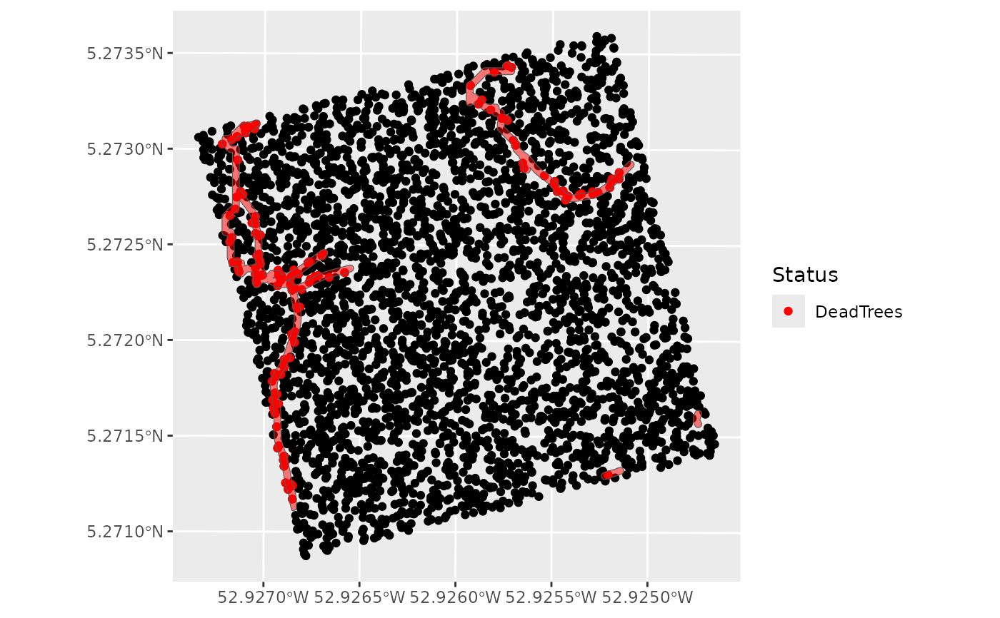

Trees removed under polygons
Arguments
- inventory
Input inventory (see the inputs formats and metadata in the vignette) (data.frame) with at least the following columns:
"idTree": unique ID of the tree
"Xutm": X coordinate of the tree
"Yutm": Y coordinate of the tree
"Selected": == "1" for the trees selected for logging.
- polygons
Polygon(s) (trails, landings) under which trees are removed. (POLYGON or MULTIPOLYGON with a crs in UTM)
- deathcause
The cause of the tree death under the polygon(s) among: "maintrail", "2ndtrail", "treefall2nd", "landing" (character)
Examples
# inventory
data(Paracou6_2016)
data(DTMParacou)
data(SpeciesCriteria)
data(MainTrails)
data(HarvestableAreaOutputsCable)
Paracou6_2016 <- tibble::add_column(Paracou6_2016, DBH= NA) # add a DBH column
Paracou6_2016$DBH = Paracou6_2016$CircCorr/pi # and calculate it
Paracou6_2016 <- dplyr::filter(Paracou6_2016, DBH >= 10)
inventory <- addtreedim(Paracou6_2016,
volumeparameters = ForestZoneVolumeParametersTable)
inventory <- suppressMessages(treeselection(inventory,
topography = DTMParacou,
speciescriteria = SpeciesCriteria,
scenario = "RIL2",
specieslax = FALSE, objectivelax = TRUE,
harvestablearea = HarvestableAreaOutputsCable$HarvestableArea,
plotslope = HarvestableAreaOutputsCable$PlotSlope,
maintrails = MainTrails,
harvestablepolygons = HarvestableAreaOutputsCable$HarvestablePolygons
)$inventory)
# polygon
data(SecondaryTrails)
polygons <- SecondaryTrails$SmoothedTrails
deathcause <- "2ndtrail"
Rslt <- mortalityunderpolygon(inventory,
polygons,
deathcause)
library(ggplot2)
library(sf)
inventory <- st_set_crs(st_as_sf(Rslt, coords = c("Xutm", "Yutm")),
st_crs(polygons))
DeadTrees <- sf::st_as_sf(
dplyr::filter(inventory, DeathCause == deathcause),
coords = c("Xutm", "Yutm"))
ggplot() +
geom_sf(data = inventory) +
geom_sf(data = DeadTrees,
aes(colour = "DeadTrees"), show.legend = "point") +
geom_sf(data = polygons,
alpha = 0.5, fill = "red") +
scale_colour_manual(values = c("DeadTrees" = "red")) +
labs(color = "Status")
